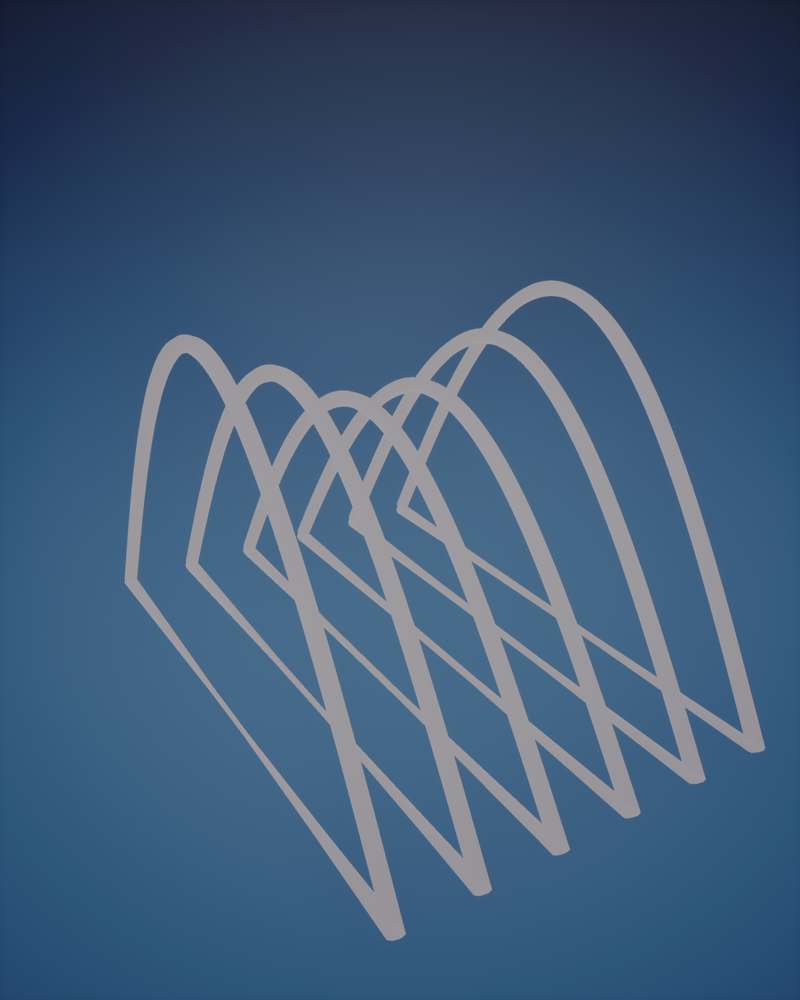
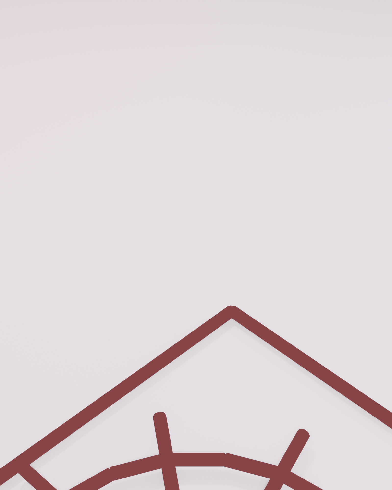
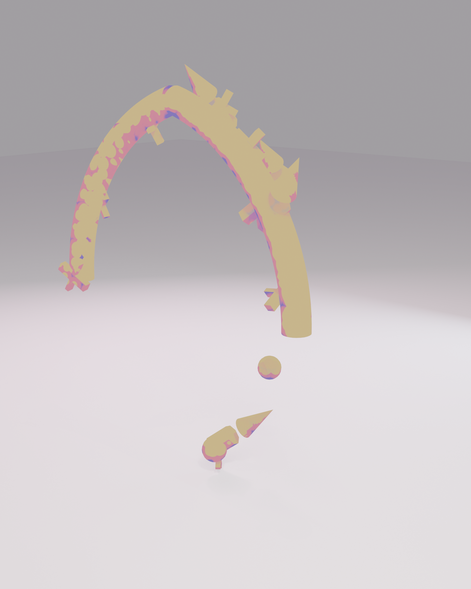
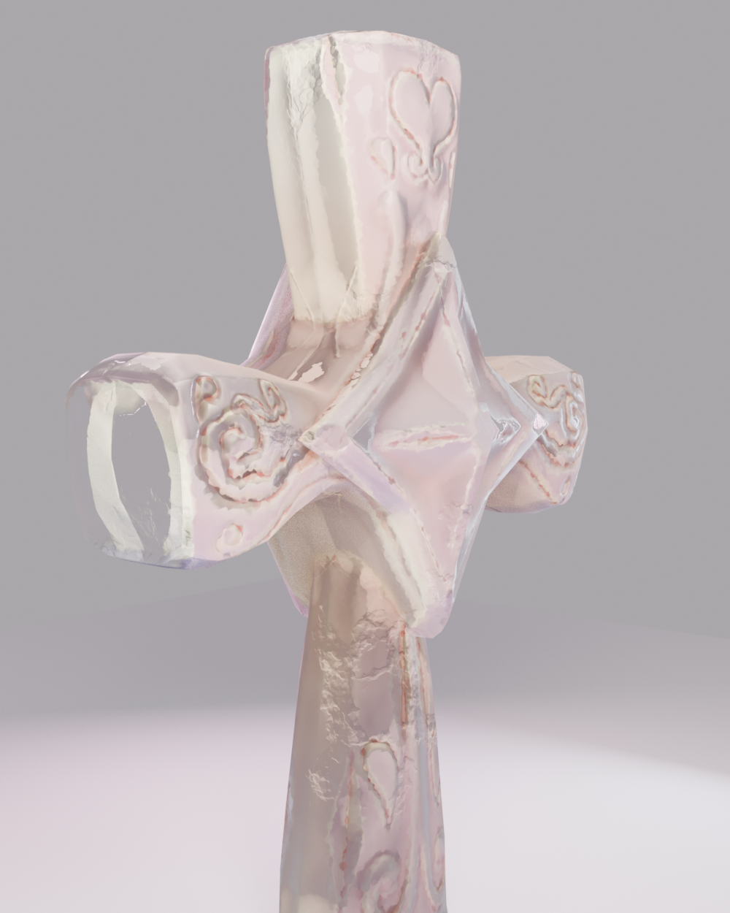
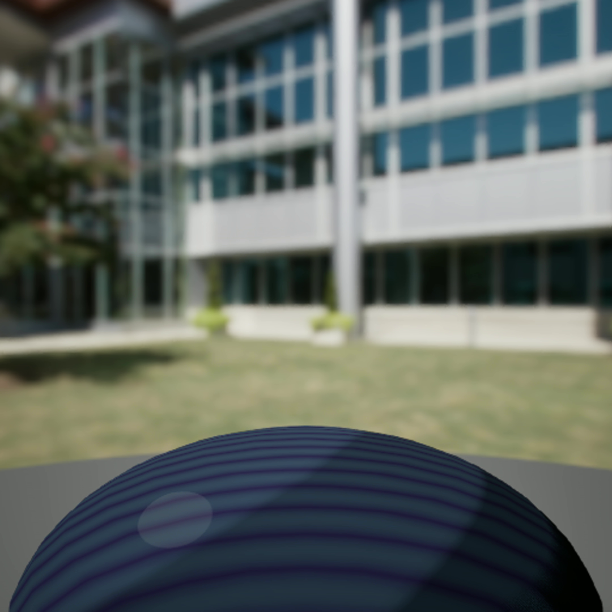
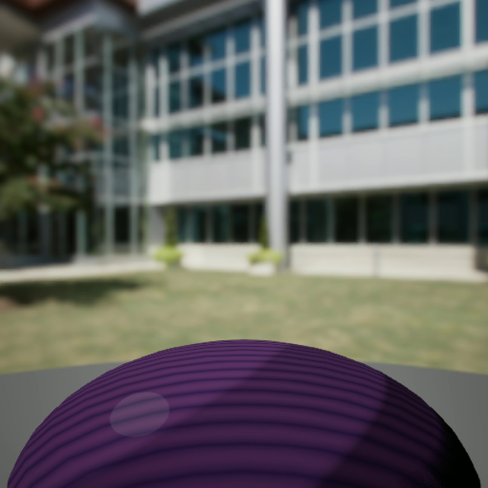
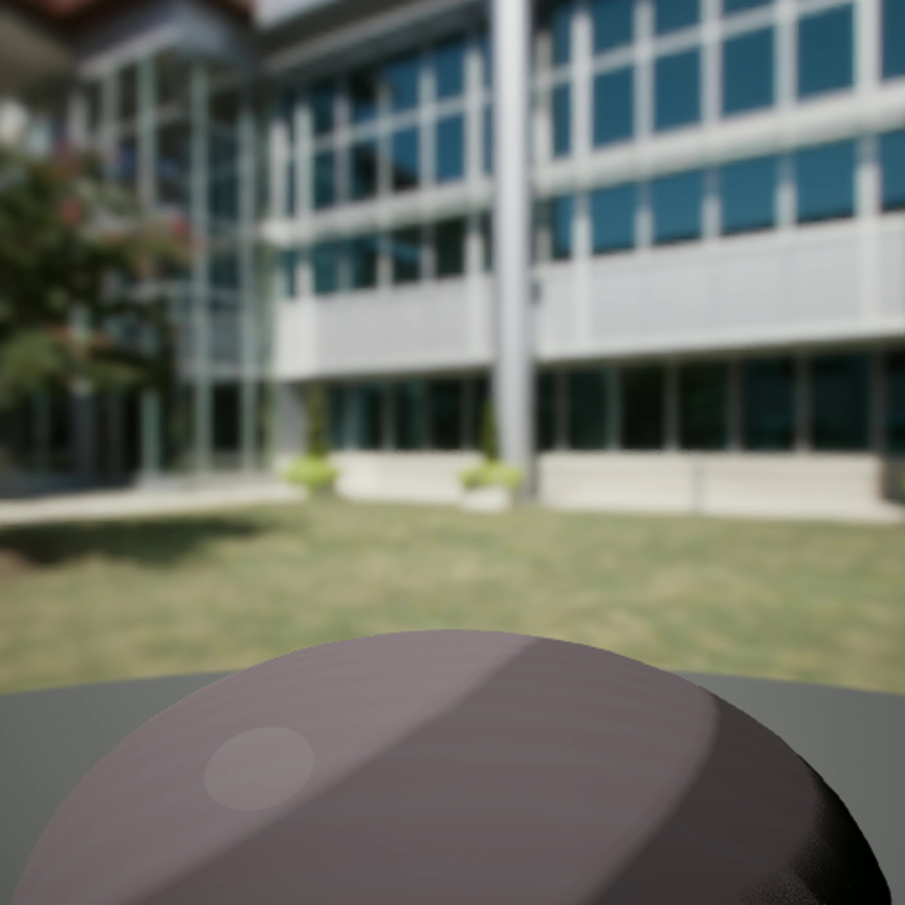
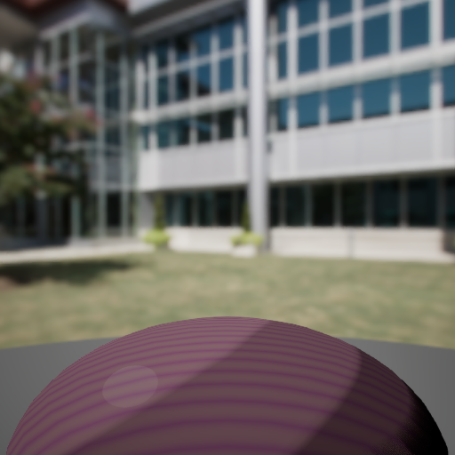
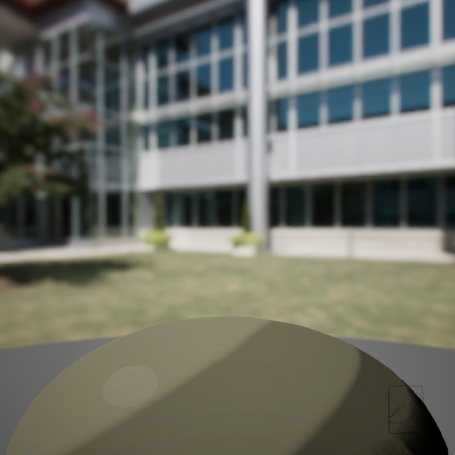

PCG_WindowArc
Rose-window instances along cathedral nave arcs, with scale variation and rotation toward focal axis.
World 02 · Space Cathedral
宇宙の大聖堂 · Gothic sci-fi
Space Cathedral hybridises gothic vaulted architecture with celestial materials — rose windows float in null gravity, ribs arc toward a starfield ceiling, and every surface carries ornamental SDF motifs. Built for the ethereal / sacred fantasy signal.
Asset Passport
Stylized cathedral environment with Substrate Toon materials, celestial SDF ornaments, and PCG rose-window scattering.
Ornamental Language
Rose windows, vault ribs, gothic tracery, and cross motifs — the ornamental vocabulary that defines Space Cathedral's gothic-celestial identity.








PCG Systems
PCG drives rose-window placement along nave arcs, vault-rib scattering with height falloff, and ornamental accent distribution across pillar nodes.
Rose-window instances along cathedral nave arcs, with scale variation and rotation toward focal axis.
Vault-rib scattering along ceiling splines with height-based density curve.
Distributes cross and oculus motifs at pillar nodes with exclusion zones around the altar focal.
Material Showcase
SDF-driven ornaments and celestial materials form the cathedral's luminous surface language — nebula veils, aurora bands, and stained-glass SDF motifs.





